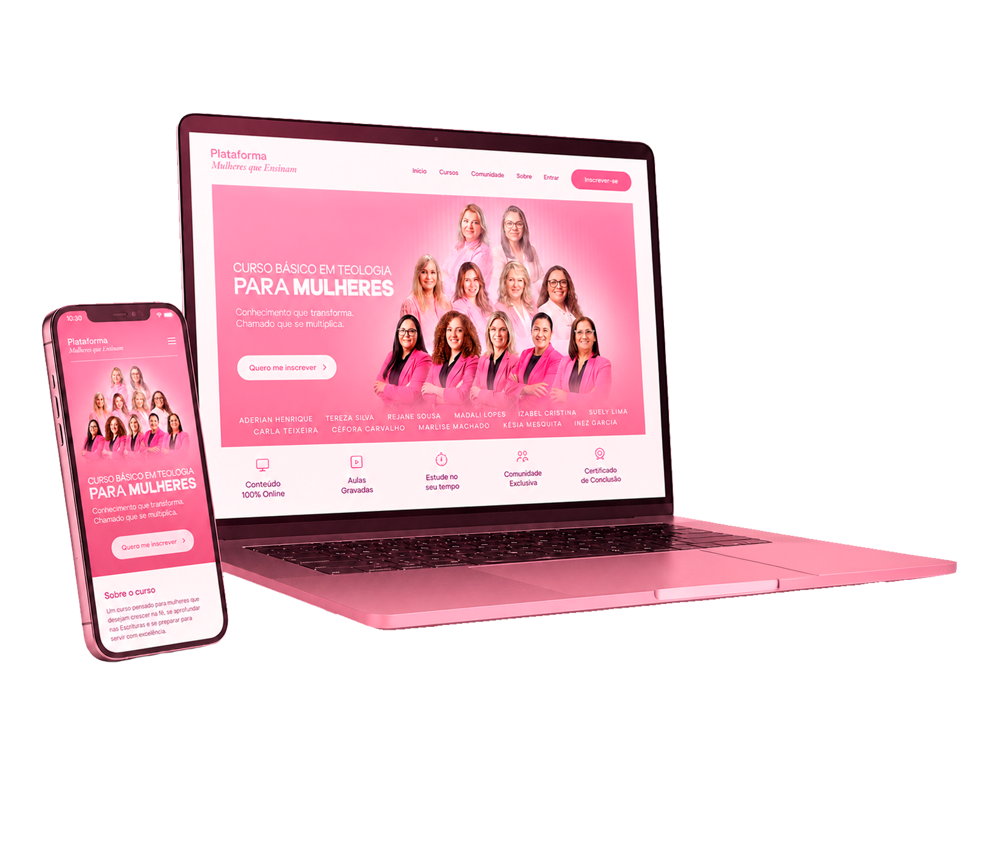
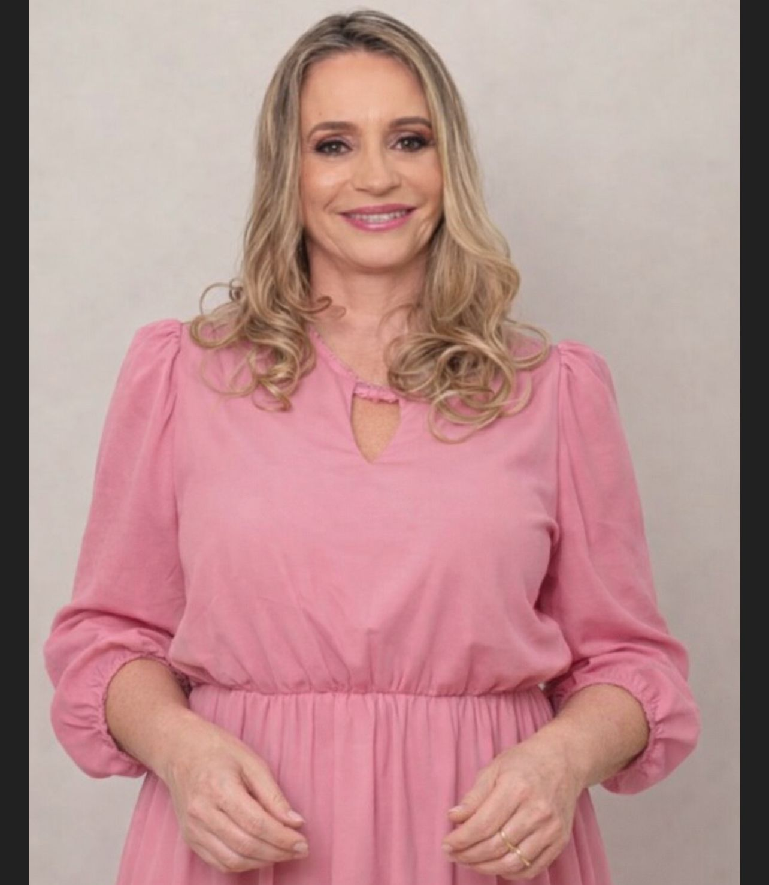

A Plataforma Rosa é um curso de 12 meses para toda mulher que não abre mão da excelência, guiada por professoras que vivem o que ensinam.
Comece sua jornada →Sobre o curso

Aqui você não vai encontrar conteúdo raso ou devocional superficial. Você vai estudar com profundidade e seriedade, num ambiente pensado para a sua jornada, respeitando sua fé, sua identidade e o seu tempo.
Em 12 meses, mais de 20 disciplinas organizadas numa progressão pensada pra te levar longe do fundamento da fé até a aplicação prática na vida da mulher cristã.
Quero ser aluna →A diferença entre apenas frequentar a igreja e estudar a Palavra com profundidade.
Para quem é
Você ama a Deus, mas sente que precisa de uma base mais sólida — além da leitura diária.
Você já ensina, lidera ou aconselha, mas quer ter certeza do que está transmitindo.
Não apenas suporte — mas alguém que entende, discute e contribui com a mesma profundidade.
O curso é feito para a rotina real: sem horário fixo, sem pressão, sem abrir mão da sua vida.
Grade curricular
Uma progressão pedagógica que vai do fundamento teológico à aplicação prática sem pular etapas, sem afobar sua jornada.
Daqui a 12 meses
Respondendo com segurança quando alguém perguntar sobre sua fé — sem gaguejar, sem "eu acho".
Ensinando a Palavra de Deus com profundidade, não só com sentimento.
Reconhecida na sua igreja e no seu círculo como alguém que conhece o que crê.
Corpo docente
Mulheres teólogas, missionárias e líderes que trazem para a sala de aula não apenas conhecimento acadêmico, mas vivência ministerial e fé genuína.

Direto da miss
Ouça diretamente da Miss. Aderian Henrique sobre a visão, o propósito e o impacto deste curso que vem transformando vidas.
Diferenciais
Formação estruturada, com clareza, de onde você estiver. Sem precisar abrir mão da sua rotina.
Todo o conteúdo ensinado por mulheres teólogas que falam a partir da fé e da experiência feminina.
Aulas disponíveis quando e onde quiser. Sem horário fixo, sem pressão, sem culpa por pausar.
Nossa equipe acompanha você durante todo o percurso. Você não estuda sozinha.
Ao concluir, você recebe o certificado da Plataforma Rosa — válido para uso ministerial na sua comunidade.
Mais de 20 disciplinas em progressão pedagógica cuidadosa — do fundamento à aplicação prática.
Idealizadora
Casada há mais de 30 anos com o Pr. Osiel Gomes e mãe de Dhayna e Delva, Aderian é formada em Psicologia e dedica sua vida à capacitação de mulheres na fé.
Fundadora da Plataforma Rosa, projeto que capacita mulheres para liderar com profundidade bíblica dentro de suas igrejas e ministérios.
Parcelado em até
Acesso imediato após a confirmação do pagamento.
Um módulo especial desenvolvido para fortalecer sua autoestima, liderança e confiança, ajudando você a servir com equilíbrio emocional e propósito.
Dúvidas
Sim. O curso foi pensado para mulheres que estão começando do zero. Você não precisa de nenhuma experiência ou formação anterior — só do desejo de aprender.
O curso combina aulas gravadas, que você assiste no seu ritmo, com encontros ao vivo, onde você interage diretamente com as professoras e outras alunas.
As aulas gravadas ficam disponíveis na plataforma para você assistir quando puder. Só os encontros ao vivo têm horário marcado, e a gravação fica disponível depois.
Sim. Ao concluir todas as disciplinas, você recebe o certificado da Plataforma Rosa com validade institucional para uso ministerial e liderança dentro da sua comunidade.
Não. O certificado é institucional, emitido pela Plataforma Rosa. Ele atesta sua formação teológica para fins ministeriais e de liderança, não para fins acadêmicos formais.
Você tem 7 dias de garantia após a inscrição. Se por qualquer motivo sentir que o curso não é pra você, é só solicitar o reembolso dentro desse prazo — sem burocracia.
Não. O curso é para toda mulher que quer aprofundar sua fé com seriedade — seja você líder, esposa de pastor, missionária ou simplesmente uma mulher que ama a Deus e quer entender melhor o que crê.
Pronta para começar?
Inscreva-se agora →O chamado está diante de você. A Plataforma Rosa preparou esse caminho. Vagas limitadas.
Quero ser aluna →